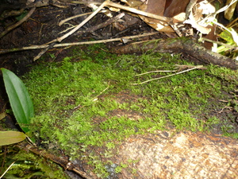

lumut2 
/lumɔt/
n.
a tree variety
Eng. tree variety
OCM: Flora (137)
DDP: Tree (1.5.1)
Online dict status: -
Usage level: R
1.
n.
it grows in a shade area, in a tree trunk, at the base and sometimes in a stones.
Ka seini iyan sika se egpanubu te batu wey diyè te me kayu ne masalig wey egkasubid dè due puun te manekal ne egpanupsup te weyig sini sikak in-ngaranan seini te lumut te kabuybuyahan.
Cult. A generic term for algae and similar plants such as moss or lichen that grow attached to rocks or trees.
Eng. algae; seaweed; moss; lichen; agar-agar
Tag. lúmot
Ceb. lumot
Ilo.: lumot
OCM: Flora (137)
DDP: Moss, fungus, algae (1.5.4)
Online dict status: -
Usage level: M
Updated by: RJH,QDL
Last updated: 13/Oct/2009
This page last updated: 19/May/2012
Copyright © 2009-2010, Matigsalug Language Christian Association, Inc